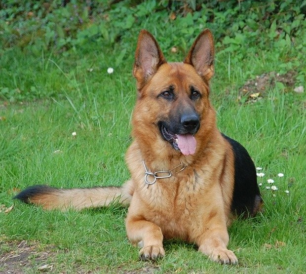
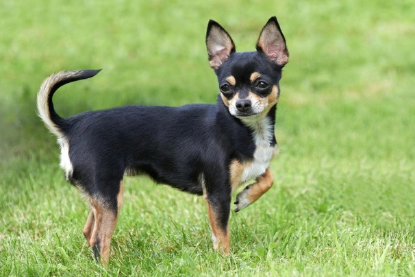
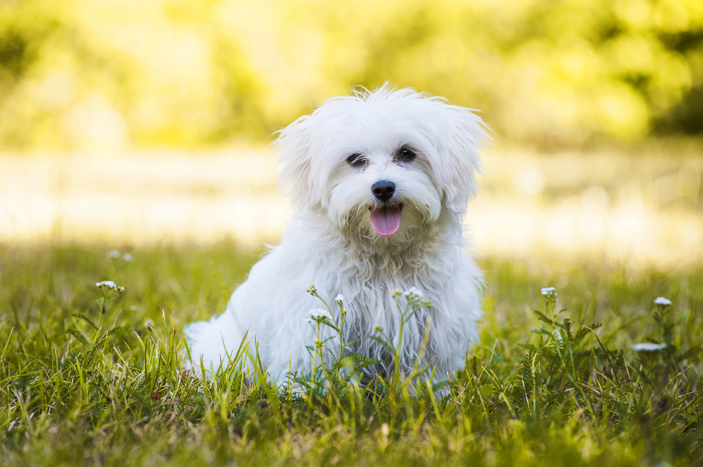

Bassotti
I Bassotti tedeschi Kaninchen a Pelo Corto sono cani molto diffusi e apprezzati in Italia
dove sono noti semplicemente con il nome “bassotto“. Allungati e allo stesso tempo compatti,
questi Bassotti tedeschi sono bassi sugli arti e hanno un fisico molto muscoloso. Di carattere,
appena li conosceremo, vedremo che sono intelligenti e molto fieri, si muovono con eleganza e agilità,
nonostante il corpo sproporzionato che alla fin fine nemmeno più si nota vista la disinvoltura con cui
i Bassotti tedeschi sfilano davanti ai nostri occhi.
Pastore Tedesco

Pastore Tedesco, la razza canina più diffusa e nota al mondo. Qualcuno si ostina a chiamarlo
ancora cane lupo, per la sua somiglianza all’altro quadrupede ben più selvatico, ma il Pastore Tedesco
è il Pastore Tedesco, è soprattutto pastore e ne è fiero. Appartiene alla categoria cani da pastore e bovari
ma le sue caratteristiche lo hanno reso, nella storia delle razze canine, anche un cane da riporto,
da accompagnamento, un cane da guardia e da difesa, un cane di servizio, ben noto alle Forze dell’ordine
e anche a molti non vedenti che guida quotidianamente.
Chihuahua

Chihuahua Toy è la sua in assoluto la razza più piccola al mondo, ed è tra le più adatte alla
socializzazione. esiste a pelo lungo e a pelo corto, viene dal Messico. Il chihuahua Toy è infatti
un cane omonimo dello Stato messicano dove sono nati i primi allevamenti di questa razza.
Labrador

Labrador Retriever si tratta di una delle razze di cani più nota e comune.
Allevato e selezionato dal XIX secolo, originario della penisola sua omonima, il Labrador
Retriever è un cane di taglia media, grande nuotatore ma anche di grande compagnia.
La sua docilità e la sua intelligenza lo hanno reso perfetto anche per attività come
l’assistenza ai non vedenti o addirittura, di recente, alle forze dell’ordine.
E’ ottimo anche con i bambini e resta sempre un abile animale da riporto, affianco
ai cacciatori dove da sempre si trova e da sempre è apprezzato.
Maltese

Il cane Maltese è un ottimo cane da compagnia. E’ leale e intelligente,
giocherellone ma ubbidiente. Si sbaglia però, chi lo crede, così carino, un cane da appartamento.
Lo è in parte, a patto che lo si porti spesso, una volta al giorno, a correre, giocare e sfogarsi
all’aria aperta. Altrimenti un animo come quello del cane maltese può soffrire.